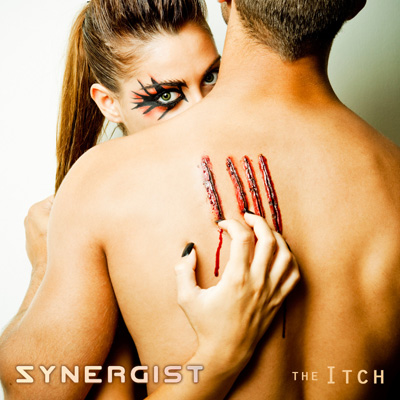

the Itch
by Synergist - Lyrics by CutcH*

beyond the edge of our exteriors
the itch begins to grow
we could try to scratch ourselves
but I just can't help but feel beside myself, when I'm alone
eyes are stealing glances at you
stop, shy away when you cast your eyes at me
cause makes me feel
like a coward
and a thief
but oh, you know, beyond the edge of our exterior
the itch begins to grow
we could try to scratch ourselves
but I just can't help but feel beside myself, when I'm alone
what's this spell you've cast upon me?
what do you see when you look at me?
subconsciously
you know I know what you need... what you need is me
well, Lord knows I'm a gentle man
and I can be sweet
but underneath I am a beast
and I want you to come with me
I'm gonna take you home
scratch the surface of your soul
beyond the edge of our exterior
the itch begins to grow
we could try to scratch ourselves
but I just can't help but feel beside myself, when I'm alone
time to carry it home, yeah, you'll see
right... it was meant to be
oh, I'm on fire
I'm in need
come to me *CutcH is Craig McCutcheon |